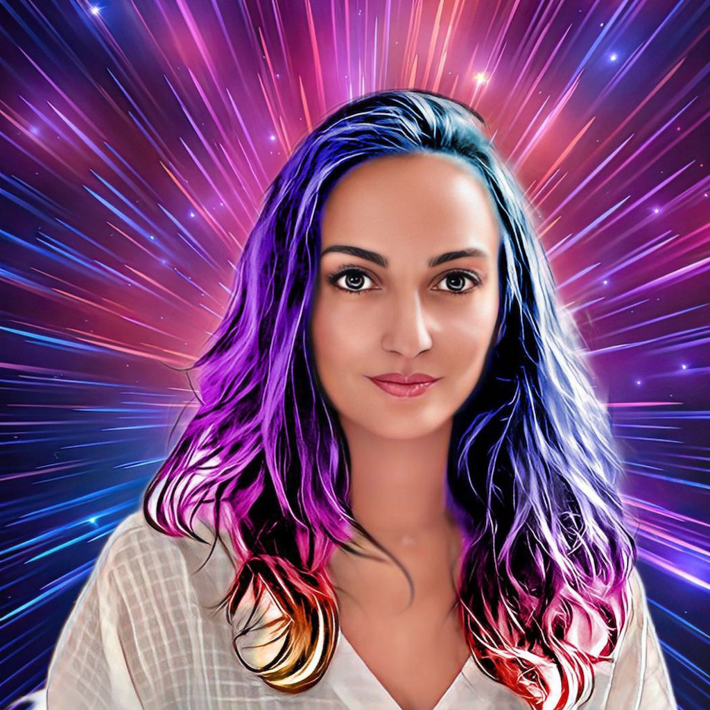
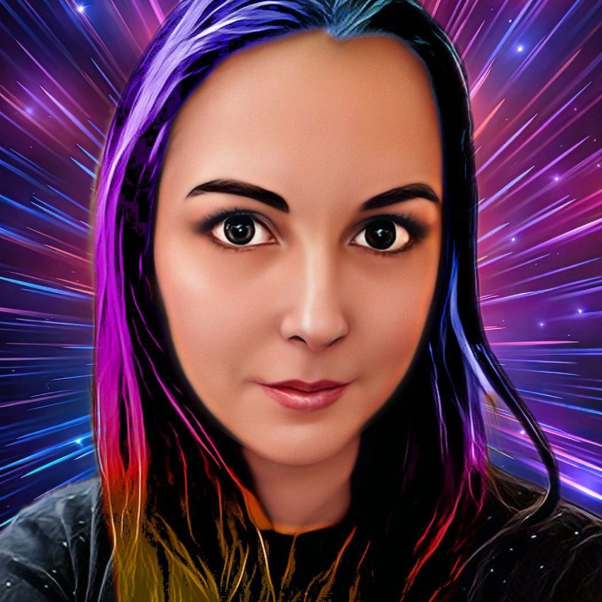

Programando para expandir los límites del universo digital.
EQUIPO
En un rincón del vasto universo, un grupo de mujeres excepcionales se reúne para forjar su destino como programadoras nómadas interestelares. Estas seis intrépidas mujeres, provenientes de diferentes rincones del cosmos, se han unido en un viaje extraordinario: un bootcamp de programación web que desafía las barreras del tiempo y el espacio.
Sus caminos se separarán finalmente, para continuar con sus propios viajes, pero los lazos que han creado y las experiencias compartidas las mantendrán unidas a lo largo del tiempo y el espacio.
Fortalezas
Cada una de ellas posee una habilidad única y una pasión inigualable por la programación. A medida que exploran los misterios del código y las maravillas de la web, su objetivo principal es dominar las herramientas y los lenguajes de programación necesarios para desarrollar aplicaciones y sitios web de vanguardia en cualquier parte del universo.
Debilidades
Como cualquier grupo, tiene diversidad de perspectivas con debilidades individuales que deben superar. No obstante, el compromiso de trabajar en ello demuestran la determinación para crecer y mejorar de cada una de ellas, a pesar de que ante algunos problemas complejos se pueda amagar con la procrastinación.
quiénes somos


Raquel García | Technomaga
Soy licenciada en filología inglesa. Llevo desde los 16 años trasteando con código por curiosidad gatuna, pero nunca me había planteado dedicarme a la programación profesionalmente. Por suerte, Adalab se cruzó en mi camino para convertir este hobby en algo mucho más significativo en mi vida!

María Peña | Dra. Robótica
Traductora de alemán, aprendiz de joyera y enamorada de la cerámica y el buen humor. Disfruto viviendo entre plantas y cerca del mar. Bailar es mi medicina y las lenguas mi pasión, lo que me ha llevado ahora a investigar nuevos lenguajes y adentrarme así en el mundo de la programación web.

Miriam Paternáin | BiotechGenius
Tras más de 10 años en el sector científico, he decidido dar un giro radical a mi vida profesional y ahora me encuentro en fase de unir lo que más me gusta, el diseño gráfico, con lo que mas curiosidad me produce, el desarrollo web. Mis ratos libres los dedico a una buena serie y a disfrutar con mi gente.
Lola García | DataMística
Trabajo de educadora en un colegio de niños con autismo, mi pasión son ellos y verlos crecer y evolucionar. Me encanta el frío, ya que con él se van los mosquitos y vienen los chocolates calientes, los días de “manta y peli /serie”… y la moda de invierno me gusta más!! Esa soy yo y cada día me propongo nuevas metas y esta con Adalab pienso cumplirla!